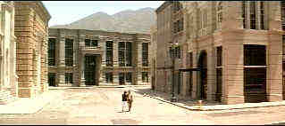
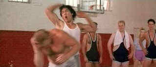

Dragon Special Edition/B+,B
Universal/1993/114m
The mysterious death of Bruce Lee in 1973, at the height of his popularity as the sire of Kung-fu genre action flicks, left worshipful fans wanting in its wake. With his reputation built on a scant structure of several completed movies, who would have thought that a dynamic filmed biography, Dragon, would explode on the screen some twenty years later, forged with far broader links of interest than the limits of the kung-fu genre might imply.This Signature Collection DVD opens with a sincere and moving audio introduction to the production by Linda Lee Cadwell.
 |
| A gaggle of shimmering edge artifacts.©Universal |
Dragon effortlessly mixes elements
from kung-fu, romance and biopic genres into a thoroughly satisfying cocktail of explosive
pleasure. Quickly covering Lee's formative years, the main focus of the film is on Lee's
development as a martial arts figure and his subsequent career as a budding cinema icon.
The key to the success of Dragon is the casting of Jason Scott Lee(no relative)as
Bruce Lee. He has the physical charisma to capture the essence of the master of martial
arts, Bruce Lee, and the ebullient charm to carry the film upon his sculpted torso. Jason
Scott Lee's second starring role alongside Map of the Human Heart reinforces the
promise of a major Hollywood career in the making. Let us hope that ethnic considerations
do not stymie his electric screen presence.
Complimenting Jason Scott Lee's convincing turn as Bruce Lee,
Lauren Holly provides attractive support as Lee's wife Linda. Their love story provides
charming interludes between the rapid paced action sequences, and in fact, is well
integrated into the overall structure.
 |
Lee demonstrates the art of self defence.©Universal |
The fight choreography in Dragon
is excellent and in many ways surpasses the original Bruce Lee films such as The
Chinese Connection, Fists of Fury and Enter the Dragon. Director Rob Cohen
handles the storytelling at a brisk pace and his camera captures the action with
appropriate gloss. Even the integration of the dream sequences that haunt Lee has been
crafted without jarring the viewer from the film's reality.
For fans of Bruce Lee, Dragon is a delight. For devotees
of the genre, it is certainly a must. Most important though, this is a thoroughly
enjoyable film for a broad spectrum of movie audiences.
The Dragon DVD appears to source from the same transfer
as the laser disc special edition. NTSC Artifacts can be exacerbated on DVD's greater
frequency range. Sharpness seems overly enhanced and on some scenes detail becomes a mass
of jumping edges. Still, color is very stable and contrast levels deliver excellent detail
in all lighting conditions. The 5:1 Dolby Digital soundtrack is quite aggressive and adds
lots of punch to the variety of kicks and slashes of Dragon.
This special editon is packed with choice material.There are
story boards presented for five different sequences. Jason Scott Lee’s screen test is
featured with an additional audio commentary by Rob Cohen. The test is very exciting and
from watching it there can be no doubt that this is the man who was meant to play Lee.
According to Cohen seven weeks of intensive training and preparation were put in by Lee
before filming the screen test and it paid off with an immediate go from the brass at the
studio. There’s more yet: a making of featurette is included that is edited in a very
entertaining fashion and includes on screen commentary from the film’s principals.
Next are outtakes from the making of featurette , which are somewhat disappointing and
only succeeded in whetting my appetite for scenes that were cut from the feature film.
Production photographs, promotional materials and a selection of photographs of Lee are
added treats, but the Bruce Lee television interview is an especially special addition to
this delightful production.